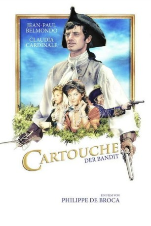
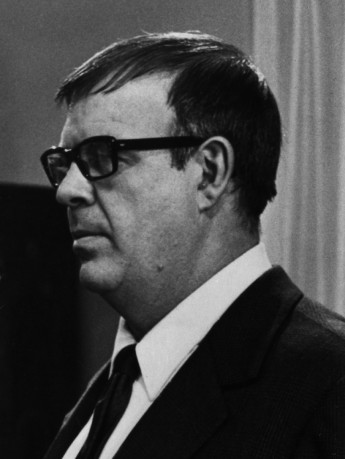
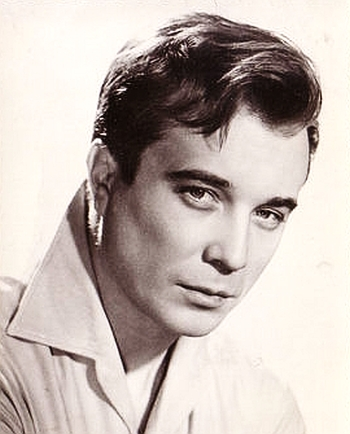
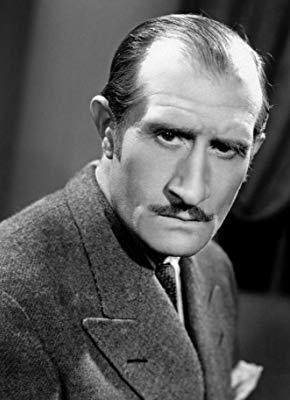

#12176 Cartouche - Rächer der Armen
Alternativ: Swords of Blood (Englischer Titel)
 
 IMDB-Wertung: 6.6 / 10
IMDB-Wertung: 6.6 / 10  Metascore: 0
Metascore: 0 
Frankreich, im 18. Jahrhundert. Louis-Dominique Bourguignon arbeitet für Malichot, den Anführer einer Räuberbande. Weil er aber mit dessen ethischen Grundsätzen nicht einverstanden ist, bildet er eine eigene Bande. Unter dem Namen Cartouche beraubt er von nun an den Adel, um das Geld an die Armen zu verteilen. Durch seine Taten gewinnt er zahlreiche Sympathisanten, macht sich aber auch Feinde: Malichot und die Polizei wollen ihm an den Kragen. Cartouche gelingt es immer wieder, sich aus ihren Fängen zu befreien - doch schließlich wird ihm die Liebe zu einer Frau zum Verhängnis.
Jahr: 1962
Dauer: 116 Minuten
FSK: 12
Land: Frankreich Studio: Neue Filmkunst Walter KirchnerTonspuren:
Untertitel: Deutsch,
Auflösung: 1080p (1920x816) Größe: 8949 MB
Genre: Action, Drama, Komödie, Abenteuer
Regisseur: Philippe de Broca
Drehbuch: Daniel Boulanger, Philippe de Broca, Charles Spaak
Soundtrack: Georges Delerue
Darsteller:
 Jean-Paul Belmondo als Louis-Dominique Bourguignon alias Cartouche
Jean-Paul Belmondo als Louis-Dominique Bourguignon alias Cartouche Claudia Cardinale als Vénus
Claudia Cardinale als Vénus-  Jess Hahn als La Douceur
 Marcel Dalio als Malichot
Marcel Dalio als Malichot Jean Rochefort als La Taupe
Jean Rochefort als La Taupe-  Philippe Lemaire als Gaston de Ferrussac
-  Noël Roquevert als Le sergent recruteur
- Odile Versois als Isabelle de Ferrussac
 Paul Préboist als Un gendarme
Paul Préboist als Un gendarme- Bernard Haller als La voix du perroquet
- Philippe de Broca als L'homme qui crie 'les aristocrates à la lanterne' (uncredited)
 Dominique Davray als Une fille de l'auberge (uncredited)
Dominique Davray als Une fille de l'auberge (uncredited) Pierre Maguelon als Un complice de Cartouche (uncredited)
Pierre Maguelon als Un complice de Cartouche (uncredited)- Jacques Charon als Le colonel
- Lucien Raimbourg als Le maréchal
- Jacques Balutin als Le moine Capucine
- Pierre Repp als Le marquis de Griffe
- Jacques Hilling als L'aubergiste
- René Marlic als Petit Oncle, le tavernier
- Madeleine Clervanne als Pierette la duègne
- Raoul Billerey als Un complice de Cartouche
- Alain Dekok als Louison
- Enzo Cerusico als Un bandit
- Jean Lanier als
- Louis Viret als
- Maurice Auzel als Un complice de Cartouche (uncredited)
- Antoine Baud als Un complice de Cartouche (uncredited)
- Billy Callaway als Un complice de Cartouche (uncredited)
- Lucien Camiret als (uncredited)
- Philippe Castelli als Le commissaire (uncredited)
- Léonce Corne als Le comte dépouillé (uncredited)
- Henri Guégan als Un complice de Catouche (uncredited)
- Paul Jeanjean als Un complice de Cartouche (uncredited)
- Raymond Leplont als L'aide du bourreau (uncredited)
- Rico Lopez als Un complice de Cartouche (uncredited)
- Armel Marin als Un complice de Cartouche (uncredited)
- Georges Montant als (uncredited)
- Jacques Préboist als Le second gendarme (uncredited)
- Irène Sologoub als (uncredited)
- Bernadette Stern als Une fille de l'auberge (uncredited)
- Roger Trapp als Un officier (uncredited)
Datei: X:\1962\Cartouche - Rächer der Armen (1962, FSK12, 1920x816).mkv seit 30.12.2019
Festplatte: Gemischt-01+Anime
 Es gibt insgesamt 23 Filme in der Gruppe '1962'
Es gibt insgesamt 23 Filme in der Gruppe '1962'